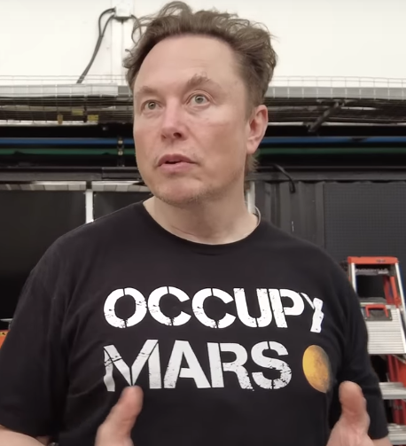

If you are in depths of depression , like me then there must problem in both physical and mental worlds .
lets just say this is loosing . so what's winnig bro [nobody knows] .(watchout some guru's will try to convince you otherwise)
let's try to explore what win could be [Recall : highly subjective]
At the end of the day : humans are RL agents , and they are trying to maximize some reward function. again [not maximizing a reward function is also a reward function]
Because nobody starts with the same set of desires , Even understanding : what is win , is going to be an iterative process .
Maybe that's why majority of Western world is better off then asians coz they start their desire above survival , and we start or mostly remains at survival .
But to nature its does not matter , how much poor that person was who figured new science , the fact he did only matters .
Truth about this iterative process
[only way to win] : Be truthfull to yourself
[only way to loose] : spend a life lived in delusions
If you follow the above process .it does not matter if you started with money[Trust me bro money is not the thing],still you will iterate over your changing desires and you will reach there .
Hack our way to destination : this above is an iterative proces : really lengthy .
For me the these 2 are winners :
[some winners]
i like less flashy so for me george is a bigger role model .
[Some loosers] : [ politicians ][ influencers ][ advertiser ]
Lets ignore the loosers and see what makes these winners [ a winner]
1.They actually and deeply know the shit they are talking about .
2.They don't think only one or two layers deep , they understand and think through entire stack from phyics to cs . They truely know what is at the core of a thing .
3.They have very good mental models to understand things like :
3.1 by comparing : what's closest thing available to compare from .
3.2 first principles : break things down to fundamentals and build up from there
3.3 change the size and scope of things and see how this will affect the system
3.4 exploring connection : everytime trying to store a new piece of information think first (how/and in how many ways) this new relates to what i already know .
3.5 looking at things from all the angles , to get a better picture of what the thing really is .
there is no shortage of framework see what suits you . Elons framework is also very good Elon's Engineering ALgorithm
Or build your own algo
The point is ...
There is a deadline of plasiticity in brain and in human potential .if you crossed that age its, you can dance with your money but now you brain is limited and shitty ...
it's most likely that i have crossed the deadline , but just for a last ditch attempt , i am going to ignore this .
How to loose [Start Fast] : set some crazy goals for the weekend and fail . [Repeat this in loop]
How to Win [start Slow] : Pick a problem that you have and think ...
Some things to keep to always keep in mind
1. you are your coach not enemy.
2. Be slow and sure .
3. Feeling of [pain and not progress] is progress
4. Your heart can fool you , brain can duck you , [ GO with the reasoning ]
5. dance on your own music
you can't go to v2 without going to v1, the only reason iPhone 14 is so good is because it has gone through 14 version updates.
Don't think elon, george as they look , think of them as [ elon version 1000 ] , and [ george version 1000 ]
What ever you want to become think interms of versions , and put a really good test-case to see if you have really become that version .
Maybe tesla, spacex , comma ai , tinygrad are test-cases .
Symptoms that you have hope : can survive
1.breaching deadline feels like dying
2.you love going hardcore , pushing harder and harder
3.Growth\Learning is your drug .
4.You have your next task to do rest is spam.
5.you are thinking from your own head , and you are not on some Hype Train
HAVE : TARGET & TESTCASE
Targets : Which define what you want in terms of implementations , why this implementation is best , what are the pillors of assumptions . what after this ...
TESTCASE : how can i know that i have passed the test case , doing this in correct way : such that it solves more then this [generalization]
TARGET : HARDCORE : 148 days : FROM 26 Jun 2023 - TO 20 Nov 2023